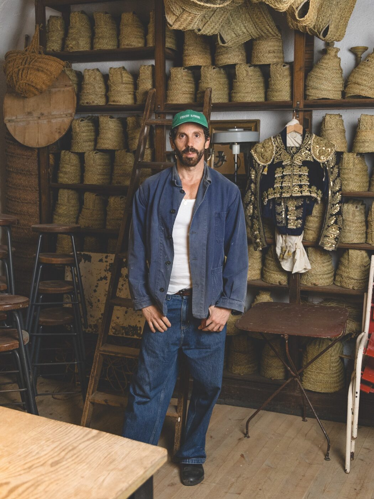

In Malasaña, in a ground-floor studio that smells of dried grass and linseed, Javier Sánchez Medina works with his hands open and his phone off. Dior, Loewe, Tiffany and Zara have all knocked on this door. They wait.
The studio sits on a street where motorcycle repair shops once outnumbered restaurants. Malasaña has changed. Sánchez Medina has not. He arrived nearly twenty years ago with a set of hand tools inherited from older artisans, including his grandmother, and a conviction that natural fibre dictates its own terms. Esparto grass is his primary material. It grows across southeastern Spain, harvested in summer, soaked, split, twisted. The plant decides the diameter. The plant decides the bend radius. The artisan listens.
His objects resist easy categorisation. A basket becomes a sculptural form. A woven panel becomes an installation. Gallery work sits alongside commercial commissions in the same space, made with the same hands, at the same pace. He does not accelerate for a fashion house. He does not simplify for a retail brand. The process takes the time the process requires.
The collaborations
Loewe found him first among the major houses. Jonathan Anderson's interest in Spanish craft traditions is well documented. The brand's Loewe Foundation Craft Prize, now in its ninth year, has mapped a global network of makers who work outside industrial production. Sánchez Medina fits this frame precisely. His pieces for Loewe exist at the boundary between product and sculpture, objects that function in a retail environment but refuse to behave like merchandise.
Dior's approach came through the house's commitment to artisanal partnerships across its métiers d'art programme. The collaboration required Sánchez Medina to produce woven elements at a scale his studio rarely attempts. He accepted on one condition: the timeline would follow the material, not the collection calendar. Dior agreed. The resulting pieces appeared in a window installation at 30 Avenue Montaigne, each panel taking three weeks to complete. Paris foot traffic passed at walking speed. The work had taken months.
The material determines how it can be worked. I refuse to override its limits. What is non-negotiable is the process and the time that process requires.
Margaux DelacroixTiffany commissioned woven vessels for a 2024 exhibition. Disney requested set pieces. Zara, the Galician giant that operates at the opposite end of the production spectrum, engaged him for a capsule collaboration that placed handmade esparto objects in selected flagship stores. The contrast was deliberate. A brand built on speed wanted to display the thing speed cannot produce.
The material
Esparto grass, Stipa tenacissima, has been worked in the Iberian Peninsula for at least five thousand years. Roman sandals woven from esparto survive in museum collections. The plant requires no irrigation, no fertiliser, no intervention. It grows in semi-arid soil where almost nothing else will. Spanish artisans have always understood this grass as a material that gives generously but cannot be rushed.

Esparto weaving in progress. Photography courtesy of The Aficionados
Sánchez Medina learned the foundational techniques from elder artisans in rural Murcia and from his grandmother, who wove domestic objects as a matter of course rather than creative ambition. He carried these methods to Madrid and applied them to forms that belong in galleries and fashion houses. The techniques remain unchanged. The context has shifted entirely.
Each piece begins with soaking. The dried grass rehydrates for hours, sometimes overnight, until it reaches the flexibility the weave demands. Splitting follows. Then the slow work of building structure by hand, row after row, the fingers reading tension the way a musician reads pitch. There is no jig, no mould, no template. The form emerges through accumulated decisions made at the speed of touch.
The resistance
Luxury fashion operates on a six-month cycle. Sánchez Medina operates on the cycle of a plant that grows in poor soil under hard sun. These timelines do not align. They are not supposed to. The tension between industrial fashion and handcraft is not a problem he intends to solve. It is the condition that makes his work valuable.
He takes commissions selectively. He declines more than he accepts. The studio remains a one-person operation by choice. Scaling would require either compromise or apprentices, and he has not yet found someone willing to learn at the pace the material demands. The knowledge he carries arrived through years of repetition, sitting beside older makers who did not explain so much as demonstrate.
Madrid's fashion community, smaller and less internationally visible than Paris or Milan, provides the right environment. The city does not pressure its artisans into performance. Sánchez Medina shows work when invited, speaks about process when asked, and otherwise stays in the studio. The door is unmarked. You find it by knowing someone who knows.
In a season when luxury conglomerates speak constantly about craft and heritage, Sánchez Medina represents the real version of what marketing departments describe. His hands do the work. The grass sets the pace. The fashion calendar, with all its urgency, waits at the door like everyone else.